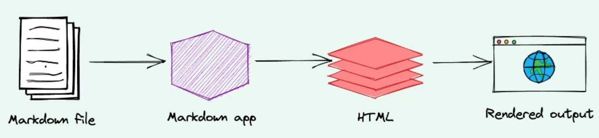

About
The main purpose of this personal project is to learn how to design a very basic website using Markdown, HTML and upload to a public domain for remote access.
A basic website consists of HTML (Hyper Text Markup Language) files with an index.html file. Markdown is a simple file format, which is getting popular and supported by many applications.
Markdown documents must be converted to HTML in order to be added to a website.
The website I created is named by "Hubble Cosmos" because the content is mostly about hubble space telescope.
However, the website is not to serve as a professional site to introduce Hubble Space Telescope,you can refer to https://hubblesite.org or https://science.nasa.gov/mission/hubble instead.
How do I design the website?
- Understand how a basic website is designed and deployed
- Understand the basic markdown syntax
- Understand the basic HTML syntax
- Search images and Hubble space telescope resources using search engine like bing.com
- Edit content with Markdown editor Marktext and conver to HTML files
- Design a website with Website tool HBuilder
- Upload the website to github for public visit
Markdown vs HTML
Markdown is a lightweight markup language created by John Gruber in 2004. It allows you to format text using a plain-text editor, making it easy to add elements like headers, lists, boldface, and italics to your documents.
It is much simpler than HTML, while HTML is the standard markup language for creating Web pages.
So markdown files must be converted to HTMLs to be added to a website.

- Write markdown file (with .md or .markdown file extension) with plain text editor or Hbuilder
- Convert the markdown file using markdown app like Marktext to HTML file
References